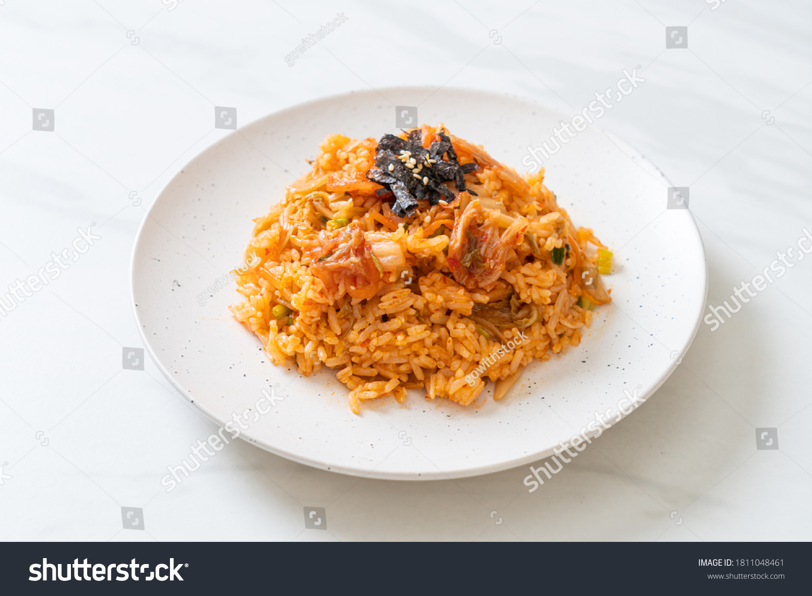

Home
Fried rice

Description
These noodles are a quick and simple meal made with vegetables,
sauce, and freshly cooked noodles.
The recipe is suitable for a weekday lunch or dinner and can be
adjusted using whatever vegetables are available.
Ingredients
- 200 grams of noodles
- One carrot
- One bell pepper
- Two tablespoons of soy sauce
- One tablespoon of cooking oil
Steps
- Cook the noodles according to the package instructions.
- Slice the carrot and bell pepper.
- Heat the cooking oil in a pan.
- Cook the vegetables until slightly soft.
- Add the noodles and soy sauce.
- Mix everything together and serve.